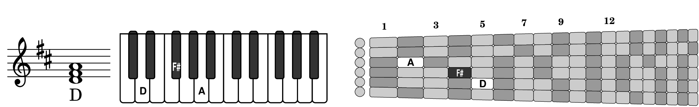

Both guitars and pianos have vibrating strings and a wooden soundboard, and there was a time when both had ebony and ivory. To play a piano was to “tickle those ivories”, but “tickle that ebony” is rarely heard in reference to a guitar and the two don't look much alike:
Nevertheless, a piano turns out to be a good model of the peculiar way music is written on the staff, since both the piano and modern music notation have the same biases toward the diatonic scale and the key of C: both misrepresent the notes of that scale as equally sized steps in pitch. On the piano, that scale is played on the evenly sized white keys. On the staff, the notes move up by the same amount to the next space or line. Both of those impressions are false.
Guitarists, however, have to deal with the truth: the “white notes” are not evenly spaced, either as pitches or as places on the fretboard, despite their appearance on the staff or on the piano.
Notice how the “black keys” on the guitar add space between some of the white notes in this simple one octave scale. Those black key gaps, which are essential on the guitar, are hardly noticeable on the piano, and not at all visible on the staff. A beginning pianist can ignore the black keys but guitarists must account for them even to play even the simplest melodies and scales.
So where are all those piano keys on the guitar? Each string on a standard 19 fret classical guitar can play a total of 20 notes, counting black and white; that's 120 notes across all 6 strings, which is way more than the 88 total keys, white and black, on a standard piano. But when you map each string back to a segment of the keyboard, you get six little overlapping keyboards, like this:
The amount of overlap is considerable. Those 120 places on the fretboard cover only 44 notes on the piano (see the full keyboard at the top), a range which happens to be exactly half of the piano's 88 notes and nearly centered around the piano's middle C (“middle C” on the guitar is different, as we'll see in a bit).
How much overlap on average? With 120 places on the fretboard shared among 44 distinct notes, that's 120 / 44 = 2.7 which means an average note on the guitar can be played on nearly three different strings. Of course the very lowest notes can only be played on the low string and similarly for the highest notes on the high string. Checking the diagram you can see that no notes on the guitar can be played on all six strings, but there are exactly two different notes that can be played on five strings (find them and play them). As we said, the average is 2.7 possibilities.
That number 2.7 is good to keep in mind when you're figuring out where on the fretboard you can play a particular riff or melody. When you shift to a different string you also have to shift to a different position along the neck. So on average there 2.7 different positions to choose from. The lesson here is just be aware that usually there's two ways to play something on the fretboard; maybe even three. And it's typically five frets away. This is in extreme contrast to the piano, which has only one place to play a particular note.
Seeing the guitar fretboard as a bunch of black and white piano keys, like at the bottom of the previous diagram, may seem overwhelming at first. Yes, it enforces the truth that guitarists have to deal with the black keys, even if it's only to avoid them at first.
But part of that truth about the black keys is much easier to remember and use when sight reading. It's the two cases where there is no black note between the white notes. The notes E and F are always next to each other along the same string, with E below F of course. And the same is true of B next to C, as show below:
For every E there is an F one fret higher, unless you're at the end of the fretboard. Same for B and C. You don't have to memorize this whole diagram to remember that much. When you are sight reading, especially in this book of diatonic melodies in the key of C, these four notes (E, F, B, C) comprise a majority of the seven notes in the scale. You'll be seeing them a lot, so it's useful to know that when you're already playing one of them, it's friend is nearby on the same string.
You may also notice friendships across neighboring strings, except where the tuning difference splits them (that's why there's a small gap in the diagram between the second and third strings). Look at the E on the fourth string at the second fret. Not only do you see an EF pair, but there is a BC pair right below it. Then you start seeing EF-BC neighborhoods everywhere, except where they're split and shifted by the fretboard gap.
Again, you don't have to memorize the whole diagram to benefit from knowing about these neighborhoods. If you're already playing at E's house, it's enough to remember that B usually lives just across the street (string), with C next to it. You'll be visiting them a lot. This is also a lesson in thinking across the strings, i.e. like a guitarist.
A pianist thinks up and down a single line of notes, and while it's important for guitarists to deal with the truth about spacing of notes along a line (a string), the limited reach of the human hand means you have to think differently.
Even young pianists can reach a full octave (e.g. two Cs), which is the equivalent of 13 frets on the guitar, and adult pianists easily reach another whole step. That's 15 frets. One hand on the piano can reach all those notes without any arm movement, something that's impossible on one guitar string where the limit is comfortably only a stretch of 4 or 5 frets.
Where guitarists have the advantage is in thinking across the strings. With six strings, even young guitarists can reach more than two octaves using just four fingers without any arm movement. That's twice what pianists can do.
The other challenge for guitarists learning the fretboard one string at a time (i.e. pianistically) is that the black/white patterns on different strings don't line up nicely like the way octaves follow each other on the piano. The “2 plus 3” repeating pattern of black keys on the keyboard is difficult to discern on a black and white fretboard diagram.
“Middle C” in piano music is not the same pitch as “middle C” in guitar music, even though they look the same on the music (one ledger line below the treble staff) and even though the middle of the guitar range is close to the middle of the piano range (as seen earlier in the six overlapping keyboards diagram). When a guitar plays middle C, the pitch is a full octave lower than when a piano plays middle C. This makes the guitar an “octave transposing” instrument, which makes your job of sight-reading guitar music much easier. Here's why.
The diagram below shows how the same notes in a two octave range are depicted in piano music and in guitar music, as well as one of the several (~2.7) ways those notes can be played on the fretboard. Right away you notice the piano music uses two staves while the guitar music expresses the same notes in only one staff. Because pianists have twice as many notes in their range (88) compared to a guitar range (44), they really need two staves to describe their typical notes, and their middle C is the one note in the middle of the gap between the treble clef staff and the bass clef staff. But this means they have to learn to read in two different clefs.
Guitar music, on the other hand, is almost always transposed down an octave so that guitarists can avoid having to learn to read the bass clef. And with only half as many notes, it figures that a guitar should only need half as many staves as the piano. This also makes guitar music much more compact on the page, which helps you when buying music or fitting it on a music stand (imagine if this book had twice as many pages!).
The slight down side of using just one staff, however, is that guitarists need to learn to read music on a few “ledger lines” above and below the staff. For beginning students, this starts with the low notes in first position, which is why there is a whole chapter in this book containing music that goes below the staff. It's still easier to learn a few ledger lines below the staff than to have to learn the bass clef, so don't complain.
As for the name “Middle C”, we will relent to convention and keep this piano-inspired name for the note written on the first ledger line below the staff:
On a standard classical guitar of 19 frets, there are only three distinct C pitches, which can be played on multiple strings, and our Middle C is the lowest. What shall we name the other two? “High C” is obvious for the highest one, playable on 3 strings, but what about the one in the, er-, middle? Mathematically it would be “Median C”, but that's so statistical. It's also the most common C on the fretboard, playable on 4 strings, so “Common C” would be appropriate. Or if you want something that's explicitly above middle, then “Upper-Middle C” comes to mind. But the simplest alternative of just plain “C” will suffice.
To see how well the single-staff approach works for guitar, and also to point out the most common ledger lines, consider the following diagram showing how nicely notes that are centered on the guitar staff are also centered on the fretboard. This is also a lesson in learning your ABCs in fifth position.
First, notice on the staff that this range of notes is exactly symmetric, extending from two ledger lines below the staff to two ledger lines above. Then notice that those ledger lines, both above and below, are occupied by the same three-note sequence ABC, with our middle C having the first ledger line below the staff but with the high A having the first ledger line above the staff. Exactly in the middle of the staff is the large B, which of course is also the center of yet another ABC sequence. Very symmetric indeed.
Then notice how these notes are located on the fretboard. They line up perfectly with the natural range accessible in the fifth position, which is about half way up the neck, demonstrating how well the center of the guitar range is centered on the staff.
Next notice that the ABC ledger groups above and below the staff happen to line up with each other on the first and sixth strings, respectively, with B always right next to its sibling C (we call them siblings rather than friends because they're so close they sound dissonant when they're both talking at the same time).
Finally, notice the odd thing about fifth position. There's no comfortable room for our big middle B. Instead of being right at the center of attention, like it was on the staff, it's now squeezed out from the other notes in fifth position. The best it can do is huddle next to its sibling on the third string or be an outcast up the neck on the fourth string. So sad. Remember this story about “poor middle B” the next time you play a tune in fifth position.
About that name, “Middle B”; the pianists have not imposed any overriding convention, allowing us to establish one that better suits the guitar, which opens more possibilities since the typical 19-fret guitar supports four different octaves of B, most of which can be played on multiple strings:
Names for the three lowest cases fall out easily once we've chosen “Middle B” for the one in the middle of the staff, which is also playable on more strings than any other note (save for a tie with first-string E). The fourth and highest case stands out as the most extreme note on the fretboard: the highest fret on the highest string, which is of course playable only in that one location, and is a note so high it is hardly ever found in guitar music. It also establishes the maximum number of ledger lines you will ever find in guitar music, which may help you learn the names of the lower ledger lines (going up: A, C, E, G) which are much more common. The name “Ludicrous B” should remind you of all these extremes.
Most people who read music notation can name or play a note immediately if it is within the staff or even near it (like middle C). They do this on sight, without resorting to mnemonics like Every Good Boy Does Fine. They are recognizing, at a glance, the unique visual pattern of where the note is placed relative to the five lines (or four spaces) of the staff. It's immediate. There are no algorithms or intermediate steps.
But when you get outside of the staff, everybody has their limits based on familiarilty. Pretty soon the notes start looking “hairy” with ledger lines and musicians are reduced to counting ledger lines or reciting the alphabet (or solfege Do-Re-Mi...) to identify a note. An old rule of thumb from psychologists and human interface designers is that the limit for counting at a glance is about seven; a set of 3 cookies looks very different than 2, but 8 cookies is hard to tell from 7.
Fortunately for guitarists, most of our hairy notes are within three ledger lines of the staff, with the extreme being Ludicrous B on the fifth ledger line above the staff. Here's the full list for guitar, with labels on the notes we mentioned in the previous section on “Know Your ABCs”.
Except maybe for the rarest high notes, to be an effective sightreader you'll need to recognize and distinguish these notes at a glance, based on their “hair”. Not just how much hair (number of ledgers) but also its location. Is it on the side of the head, like for A and C above, or bald like B (i.e. is the note head on a line or a space)? These are the distinguishing features you've got to notice at a glance for notes outside the staff.
Keep in mind that for sightreading you don't have to name these notes, you just have to be able to play them. Start small; make friends with just a couple of them, like the middle C you already learned and the high C you saw in the previous section. Notice what they look like on the staff and where to find their lowest example on the fretboard. Then add another pair, e.g. with three ledger lines like these two notes (one of which is bald). These happen to be three octaves apart, which you'll notice as you play them. You should be able now to figure out where these two are on the guitar from the annotations in the diagram below. Give it a try.
If you want to go beyond playing these notes and begin talking about them with others, then you will also need to learn the names of these hairy notes. That will also expand your musical understanding by helping you recognize what harmonies and chords would fit with a particular melody. Guitarists are often good at naming the low notes from having played chords, but they get lost again when dealing with the high notes, particularly the rare ones.
Here are some visualization techniques you can use to recall the names of these extreme notes. You wouldn't use these while sightreading, unless maybe you're improvising an accompaniment in real time, but they should help you name whatever note you just played without counting on your fingers or remembering a lot of trivia.
To identify the very highest notes, you can use the “double treble trick” shown below.
Visualize a high copy of the treble clef positioned so that a normal high C (two ledger lines above the normal staff) would look like a middle C (one ledger line below the high staff). Such a staff will be exactly two octaves above the normal staff and it will still be a familiar “G” clef, so you can immediatly use your knowledge of the normal staff to name high notes. For example, the first line of this high staff is an E, same as on the normal staff. It takes some visualizing, but it beats remembering some formula and doing arithmetic on ledger lines.
The other, more general, visualization technique could be called the “triad ruler”. It's a very fast and easy way to identify notes you don't recognize that are in the vicinity of some note that you do recognize. And it works for both low notes and high notes, and in whatever clef you happen to be reading (treble, bass, cello, tenor, ... anything). The catch is you need to know your triads backwards and forwards, literally (see the next section on triads).
Once you know them, triads are handy tools for measuring intervals and identifying nearby notes. On the staff, they each appear as a three-note chord where the notes heads just touch; i.e. they're on three neighboring lines or three neighboring spaces (so all three have hair on the sides of their heads or all three are bald).
To use triads as a ruler, look at a note that you recognize, like the high C in the example below, and imagine a triad that extends up or down from that C. To compare against higher notes near that C, we'd imagine the C major triad, as shown below. Knowing its notes are C, E and G, we'd see (in our mind's eye) what a very high G looks like (on the fourth ledger line) and be able to identify it and neighboring notes with speed and confidence.
The triad ruler also works for the lowest notes. The example below starts with a known note, low B, and extends it downward by imagining the triad that has B as its top note. That would be the E minor triad with notes E, G and B (all of which are bald in this octave).
If you don't want to learn all the triads right now, just remember the two examples above for identifying the most frequently confused notes above and below the staff.
Knowing the “diatonic triads” is as fundamental as knowing the lines and spaces on the staff, and easier to remember because they are in chunks of three, and more useful because they're the basis for understanding why chords may sound different despite looking the same on the staff.
The diatonic triads are three-note chords formed from next-nearest neighbors in the diatonic scale. For example, the first triad in the key of C consists of the first, third and fifth notes of the scale, allowing them to fit comfortably touching each other without the crowding (and dissonance) that neigboring notes would produce.
Going on to D and again skipping neigboring notes produces the next triad from the second, fourth and sixth notes of the scale, and so on, until we create all seven triads rooted on the seven notes of the scale. Each triad fits comfortably (and consonantly) into adjacent spaces or adjacent lines, but otherwise looks just like the other triads as they go up the scale.
Yet some peculiar just happened. These triads don't sound the same even though they look the same. Three of the chords are major, three are minor, and the last one is diminished!
We saw something like this before, in the section on “The Staff, the Piano and the Truth”, where the half steps for EF and BC affected the scale on the guitar much more than its appearance on the staff or on the piano. Now we have that effect in triplicate, and it's changing not only the fingering on the guitar but the fundamental way these chords sound on all instruments.
Are you ready for the truth about triads?
The diagrams below show how each triad appears (1) on the staff, (2) on two octaves of the keyboard, and (3) on the whole fretboard. The dark gray cells on the fretboard correspond to black keys on the piano, while the light gray cells are white keys on the piano. The guitar fingerings show how these chords can be played on the third, fourth and fifth strings as you move up the neck. This isn't a sight-reading leeson, so don't try to remember all these notes; just notice that the guitarist has to change chord shapes going up the neck to avoid playing on dark gray, while the pianist is able to use the same hand shape for each chord and just shift it up to the next white key, without the black keys getting in the way.
Again, beginning guitar students must deal with the diatonic truth, but are better for it. They notice that the different chord shapes required for major, minor and diminished triads affect how they sound, whereas beginning piano students may not even notice the different sounds produced as their rigid hand shape moves up the scale.
The chord diagrams below summarize what a guitarist learns when playing these triads. Major and minor chords are the same except for having to reach farther down the neck to flat the third, otherwise the hand just moves up the neck so the root finger is at the next note of the scale (remember the EF and BC steps being a shift of only one fret). The final exception here is the bigger stretch required for the diminished chord, to flat the fifth as well as the third.
This is a good time to get out your guitar and play this sequence of triads. The first triad is a little different due to the open string, but you will soon get into the groove of moving up two frets (except for E-to-F and B-to-C) and changing how you finger the middle note (the third) to switch between a major chord and a minor chord. And finally the extra stretch for the diminished triad.
Start easy. Focus on the chord shapes and don't worry about the exact notes. Just pick a root starting point on string ⑤ (the A string) any place up the neck where the fret spacing is comfortable (e.g. 10th fret). Finger that note with your fourth finger, then place your third finger on the next string one fret lower (9th fret) and finally use your first finger on the next string two frets lower than that (7th fret). That's a major triad. Play and listen.
Now change that triad from major to minor by using your second finger one fret lower (8th fret) than where your third finger was on the middle string. Again, play and listen. If you can reach it, try stretching your first finger down one fret (6th fret) to change your minor triad into a diminished triad. Go back and forth to major and minor on that same root, listening to the results.
Then try shifting the same chord shape up and down the neck by one or two frets (just the major or minor shape; diminished is for high on the neck). Continue down the neck until you have a major shape with your first finger on the nut (open G string). That's the starting point for the full sequence illustrated above (fourth finger at 3rd fret C, third finger at 2nd fret E, making the C-E-G major triad).
You'll also need to remember when to switch between these three chord types as you go up the neck. The pattern for diatonic triads is always:

then back to Major as the cycle continues (or until you run out of fretboard). The black and gray bars above merely highlight the way the three majors and the three minors interlock in a symmetric visual pattern, leaving poor lonely B at the end feeling diminished. Or if your left-brain memory of symbols is better than your right-brain memory of patterns, just remember the sequence C, Dm, Em, F, G, Am, Bdim.
That's enough detail for you to play and hear the diatonic triads.
But you also should learn to think of these triads in terms of the intervals between their various notes. That will make them handy examples for the terminology used in more complex chords and musical concepts. Intervals also provide a useful way to understand why major, minor and diminished chords sound the way they do.
On a guitar, the easiest way to describe an interval between two notes is by how many frets separate them if they're played on the same string. On a piano, it's how many half steps (black or white keys) separate them. These two measures are the same number.
Another common way to describe intervals is based on their “scale degree” in the diatonic scale; i.e. whether something is, say, the third step higher or lower along the scale from a given note. This is not a number, nor a fraction, but a word (or two) like “octave” or “major third.” It's convenient when talking about music on the staff, but it's complicated by those EF's and BC's that cause shorter intervals between some notes of the diatonic scale.
You've already used intervals when tuning neighboring strings on a guitar. The low strings are tuned in “fourths”, meaning e.g. if low E is the starting point (the first in the scale), then F is the second, G is the third and A is the fourth. So A is a fourth above E. You also know that takes five frets, so a fourth equals five frets.
The diagrams below use both ways to describe the intervals in our major, minor and diminished triads. Think of these like chord diagrams for three notes on the same string so we can see how many frets separate them. The note labeled “1” is the root of the triad; “3” is its middle note and “5” is the high note.
The three notes of every triad may look evenly spaced on the staff, and even sometimes on the keyboard; but these diagrams show the truth on the guitar. The “middle” note is not exactly in the middle. It's a half step (one fret) closer to one end of the triad than the other. That's because the overall width of a major or minor triad is 7 frets, so one “half” is 4 frets (a major third) and the other is 3 frets (a minor third).
In all major triads, the larger interval (major third) is on the bottom, next to the root, while the smaller interval (minor third) is on top, next to the fifth. Since you know C-E-G is a major triad, you now know that its middle note, E, is a major third above C, but a minor third below G. That's because the short EF boundary falls within the E-G interval and shortens it to a minor third.
In all minor triads, the parts are reversed; the smaller interval is next to the root with the larger interval next to the fifth. Since you know E-G-B is a minor triad, you now know that its middle note, G, is a minor third above E, and a major third below B. Again, that's because the EF boundary falls in the lower part of this triad, and the BC boundary is outside this triad.
The diminished triad, B-D-F, is the only one that just spans both the BC boundary below and the EF boundary above, which shortens both of its halves into minor thirds and also reduces its overall width to just 6 frets (a so-called diminished fifth).
Here, take another look at the diminished B-D-F triad on the keyboard below. It's perfectly symmetric around D regarding the BC and EF boundaries, barely reaching down to include the BC boundary and up to include the EF boundary above. Nudging it one way or the other would include only one of those boundaries. That's why only one of the diatonic triads is diminished. It has to be positioned just right to encompass both short boundaries.
In all the other triads, the fifth is still wide enough that it has to include one of these short boundaries. So, if the shortfall is in the upper part, the triad is major; in the lower part, the triad is minor.
Studying the diatonic triads teaches us that these two short intervals in the diatonic scale give us major, minor and diminished chords.
As irksome as they may be at times to guitarists, they are essential to harmony and our enjoyment of music. It wouldn't be the same without them.
Don't assume that diatonic means no sharps or flats. If we transpose our original diatonic scale up a full step (two frets) from the key of C to the key of D, two notes of the scale will move to sharps. But the sequence of long and short intervals is still the same: the E-F interval becomes the half step F♯−G and the B-C interval becomes C♯−D.
Building our triads as before from every other note of the scale copies those two sharps all over the place, so there are plenty of sharps in these triads.
But because every F and C are now sharped, all those sharp signs can (and typically are) factored out and placed in the key signature. If some note did not follow the (diatonic) key signature, it would be marked as an accidental. So diatonic means no accidentals if you're in the correct key signature.
But sharp or flats in the key signature nevertheless do require you play the affected notes properly, as can be seen in the diagrams below for the triads in the key of D. In this particular example, the guitar has the advantage over the piano. Take a look at the third triad, F♯m. The pianist has to play two black keys and one white key, which is a different hand shape, whereas the guitarist can use the same old minor chord shape previously used for Em, just shifted up two frets.

To be sure, if your were sight-reading a diatonic piece in the key of D on guitar, you would still need to know where those two sharps were on the fretboard, which is something we're putting off until later. That's why all the pieces in this diatonic book are in the key of C.
For our final study in black and white, imagine that all twelve distinct note names have been written on little square tiles that we can line up however we please.
When we line up all twelve in the order of increasing pitch, we get what is called the “chromatic” scale, where the musical interval between adjacent tiles is always the same, namely a half step, i.e. up one fret on the guitar.
A chromatic scale can start on any note and still sound like a chromatic scale, because all the intervals are the same. A chromatic scale is also trivial to play on a guitar; just run your finger up the fretboard one fret at a time.
If instead you choose to play only on the seven white tiles (the white keys on the piano), you get what is called the “diatonic” scale in the key of C major. These are the notes that are familiar from childhood toys and nursery songs.
Because the black notes are missing, the intervals between these remaining notes tends to be a full step, but not always (remember your EFs and BCs). Those differing intervals mean you get a distinctly different sound if you start this scale on different notes. In particular, playing eight notes starting with A produces the familiar A minor scale.
This book is called “Diatonic Fretboard Exercises” because it only uses the above seven notes. That makes it easier when you are just starting to learn the fretboard (you need to know only about half as many notes, and many of the tunes are familiar from childhood). The next book, “Chromatic Fretboard Exercises”, sprinkles in the other notes, making it more challenging technically but more rewarding musically.
Some of the exercises in this book use only five of the seven diatonic notes, i.e. they use the “pentatonic” scale. By eliminating the F and B, this scale has no half-step intervals, making its music more harmonious and easier to sing. Examples are found in old folk songs from East and West as well as more children's music. The pentatonic scale is also famous in popular rock music (not in this book) and is easy to play on the guitar.
Because it has some large intervals (one and half steps), this scale sounds very different when started at different points. But ironically for a book on white notes, this scale can be shifted up or down by a tritone (the interval between C and F♯) where it fits perfectly on the five familiar black notes of the piano and sounds just the same. Indeed, the five black notes, with their familiar 3+2 grouping, provide a good visual model of the intervals in the pentatonic scale.
Before putting our black and white tiles away, you really must see an amazing and illuminating demonstration of another relationship between the notes of the chromatic, diatonic and pentatonic scales.
It happens when you rearrange all twelve tiles in the order of rising fifths. That is, start with any tile, for example F, then choose the note one fifth (7 half steps) above that. That would be C. Then another fifth above that, which is G. And so on, each time bringing the result back to our original octave.
The first amazing fact is that stepping through by fifths actually produces all 12 notes of the chromatic scale. Second, all 7 of the notes of the diatonic scale in C are in the middle, with the chromatic flats on the left and sharps on the right. Third, all 5 notes of the pentatonic scale in C are even closer to the center. This was likely how all these notes and scales were chosen historically, going back at least to the Pythagorean realization that the most consonant sounding notes had frequencies with simple whole number (integer) ratios between them, namely octaves (ratio 2:1) and fifths (ratio 3:2). So notes close together in this list sound better together, which fits with the progression of decreasing dissonance as the scale is trimmed down from chromatic all the way to pentatonic.
Even more amazing is that any other 7 adjacent notes form a diatonic scale but in a different key. For example, shifting the set one step to the left picks up the B♭ and drops the B, forming the F major scale. Likewise shifting to the right drops the F and adds an F♯, producing the G major scale. The same applies to any 5 adjacent notes forming pentatonic scales in other keys.
Music is beautiful in so many ways. Now get out your guitar and start tickling that ebony!